20 articles · 2022–202420 篇文章 · 2022–2024
Blog博客
Space elevators, fusion energy, robotics, mathematics, physics, and a little poetry. All 20 posts from my original blog, in their original languages and at their original addresses.太空电梯、聚变能源、机器人、数学与物理，以及偶尔读的诗。这里收录旧博客的全部 20 篇文章，保留原文语言与原来的阅读地址。
2024
2023
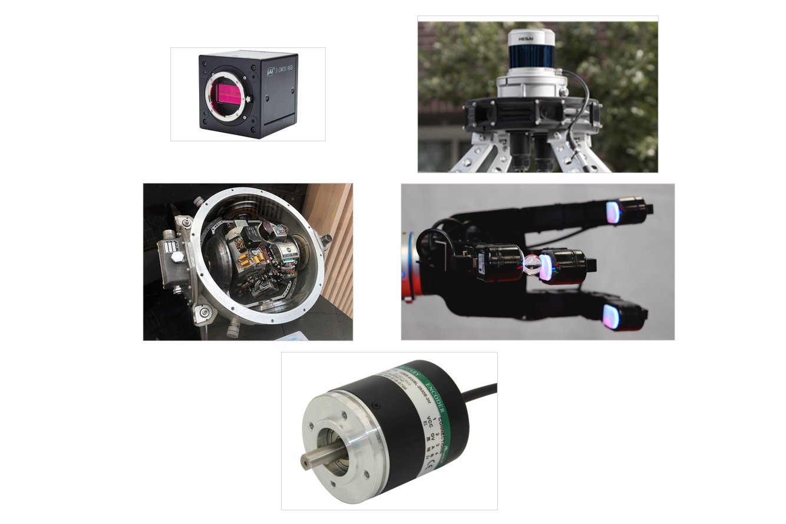
Robotic Seminar:Sensor Modeling in Sim2Real- 梦游天姥吟留别
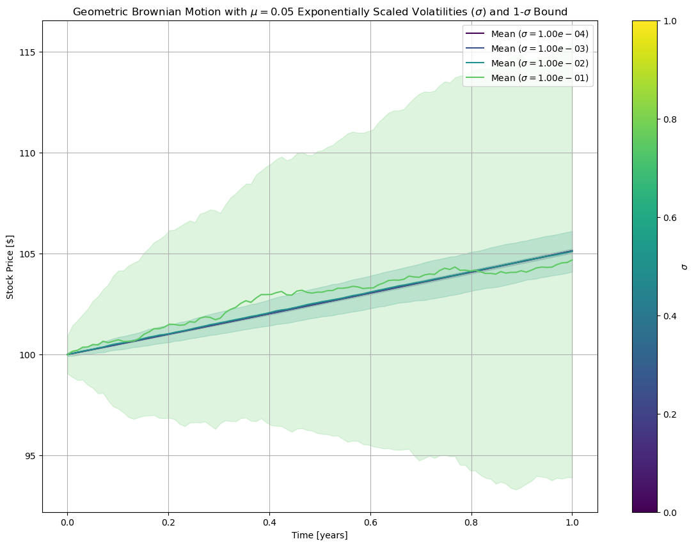
Mathematics for New Technologies in Finance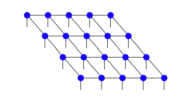
Computational Quantum Physics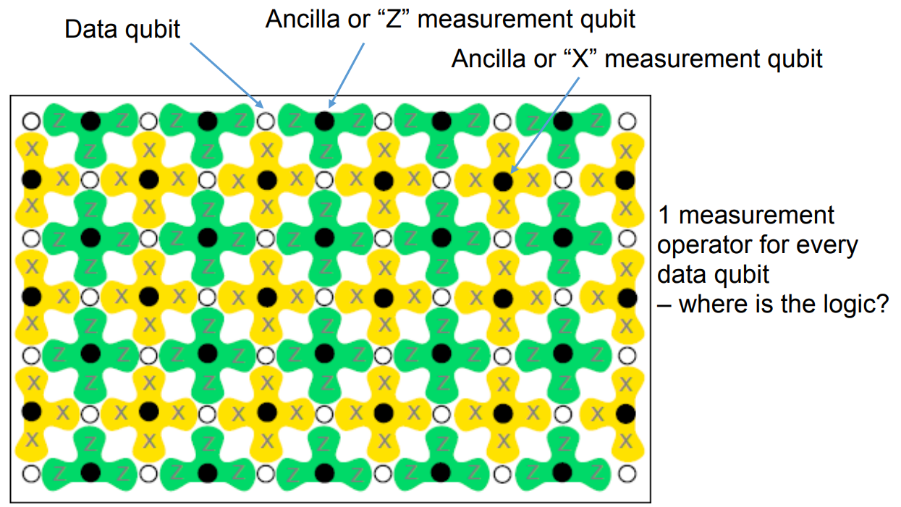
Quantum Information Processing:Concept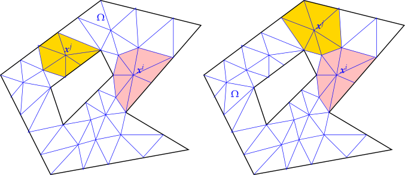
Numerical Method for Partial Differential Equation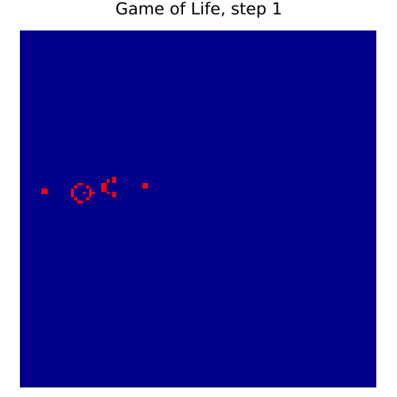
Computational Physics Question Card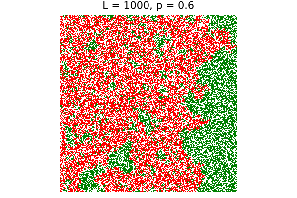
Computational Physics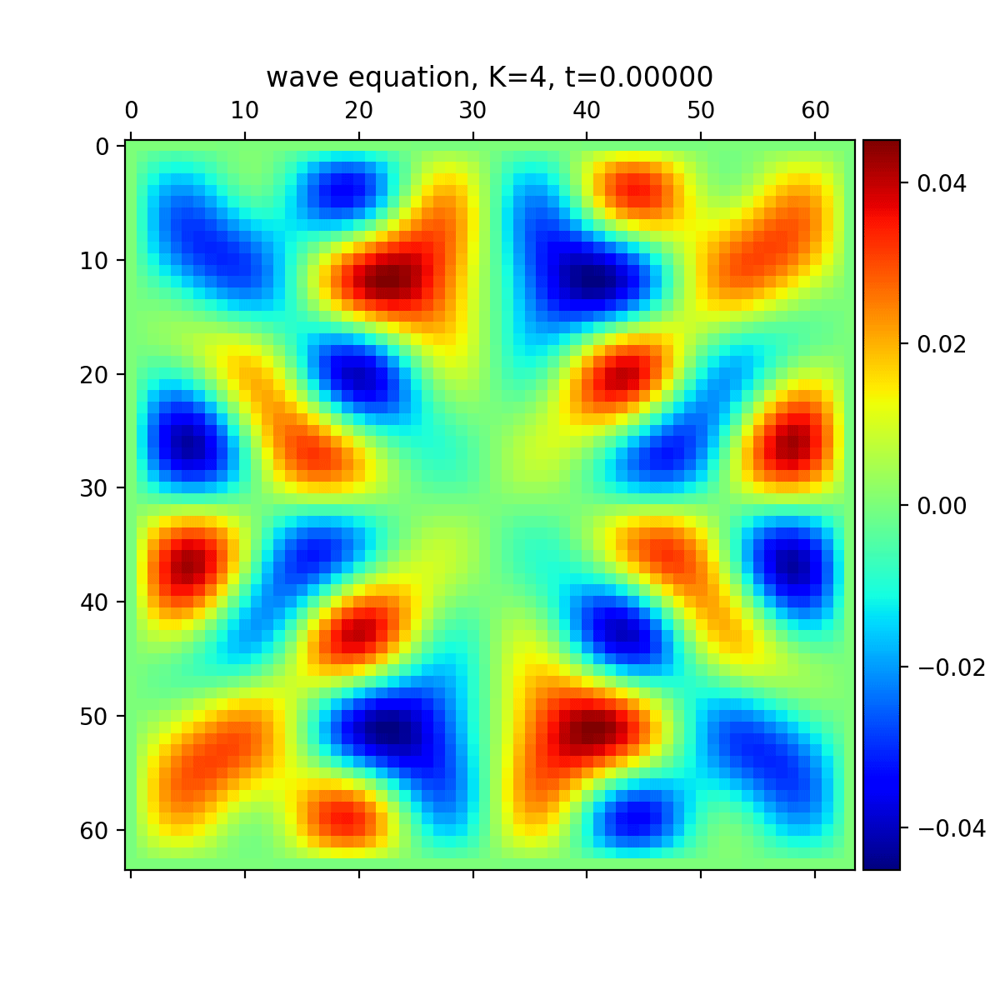
Neural Operators and Operator Networks vs Parametric Approach: A General Comparison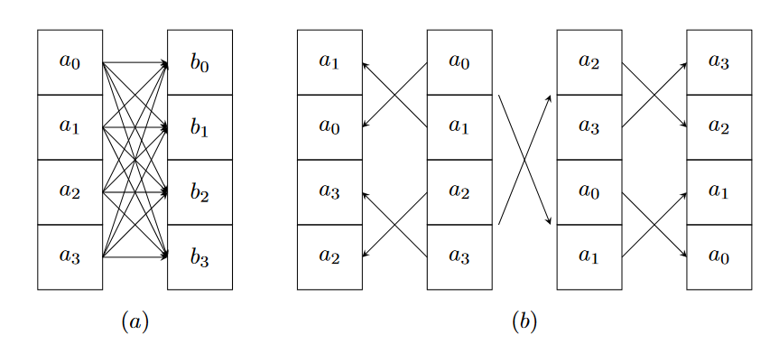
Optimizing the Social Force Model: Investigating Memory Layouts and Register Pressure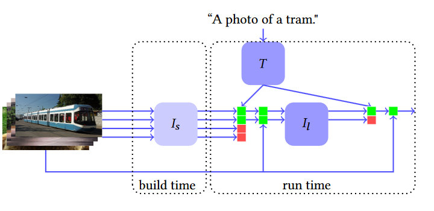
Model Cascades for Efficient Image Search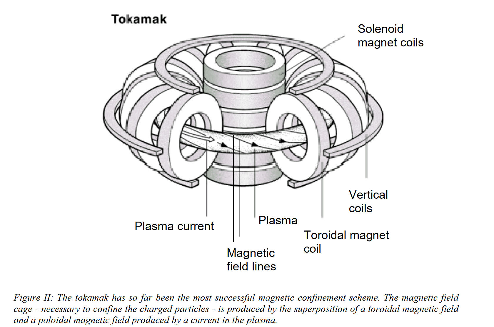
Infinite Energy is closer than you think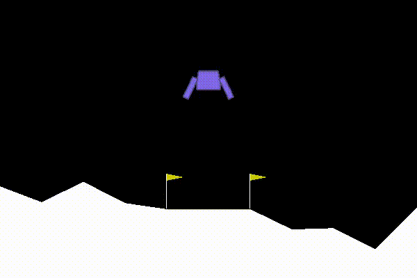
Probabilitisc Artificial Intelligence